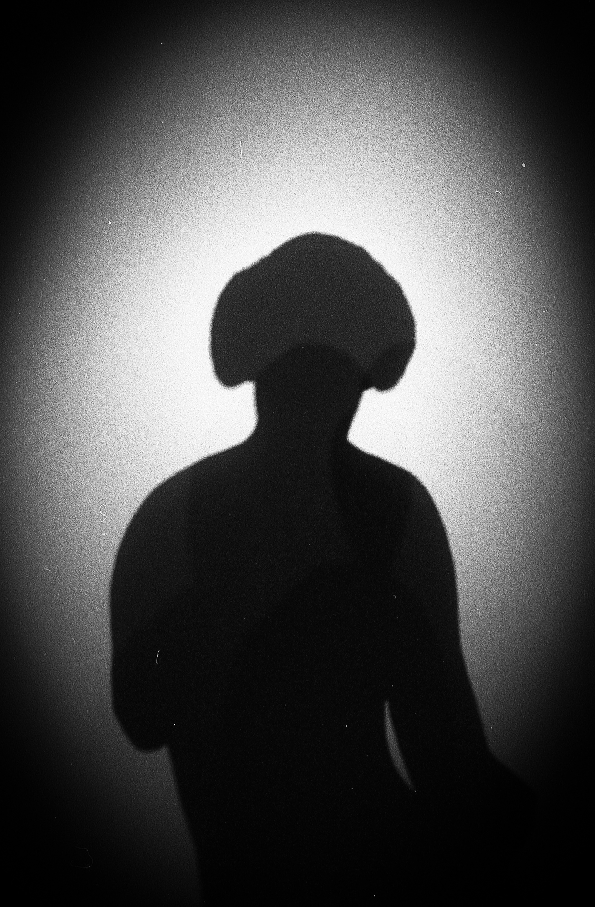
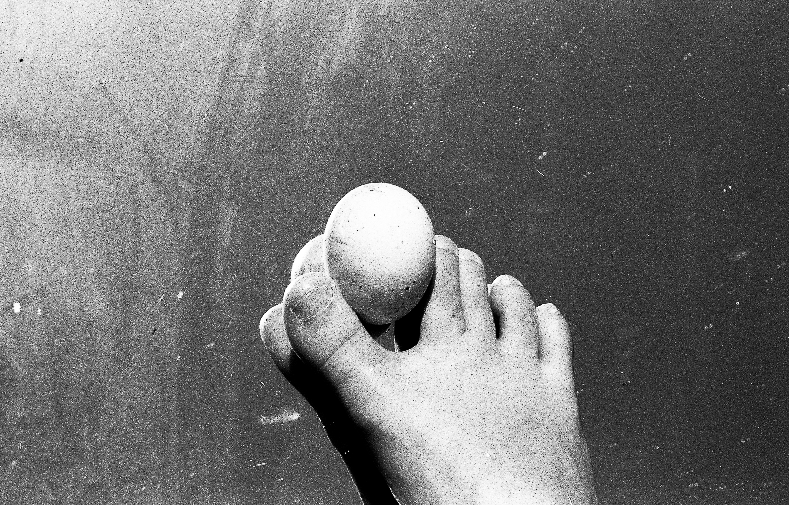
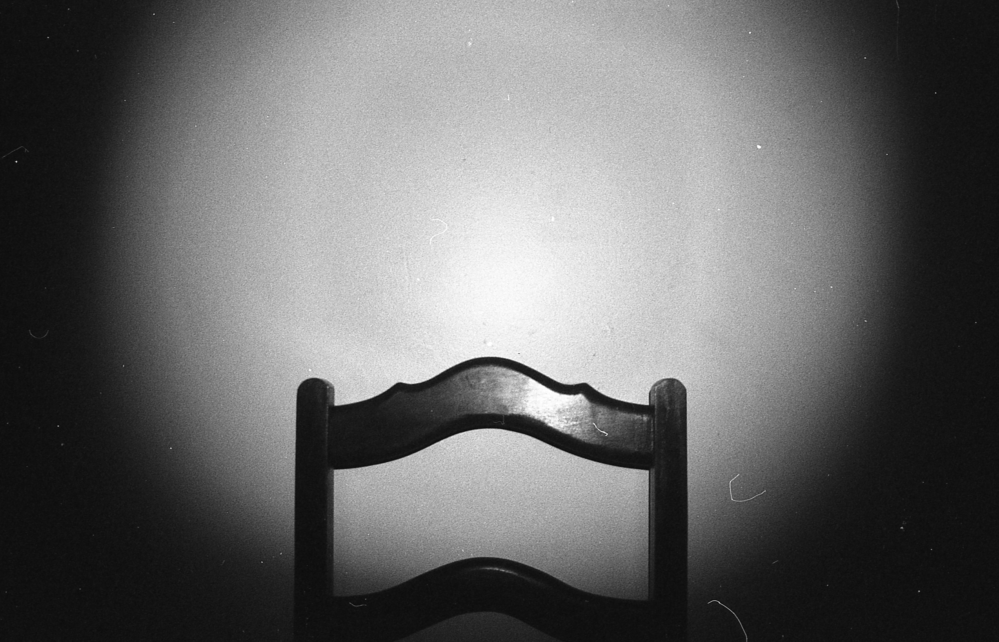
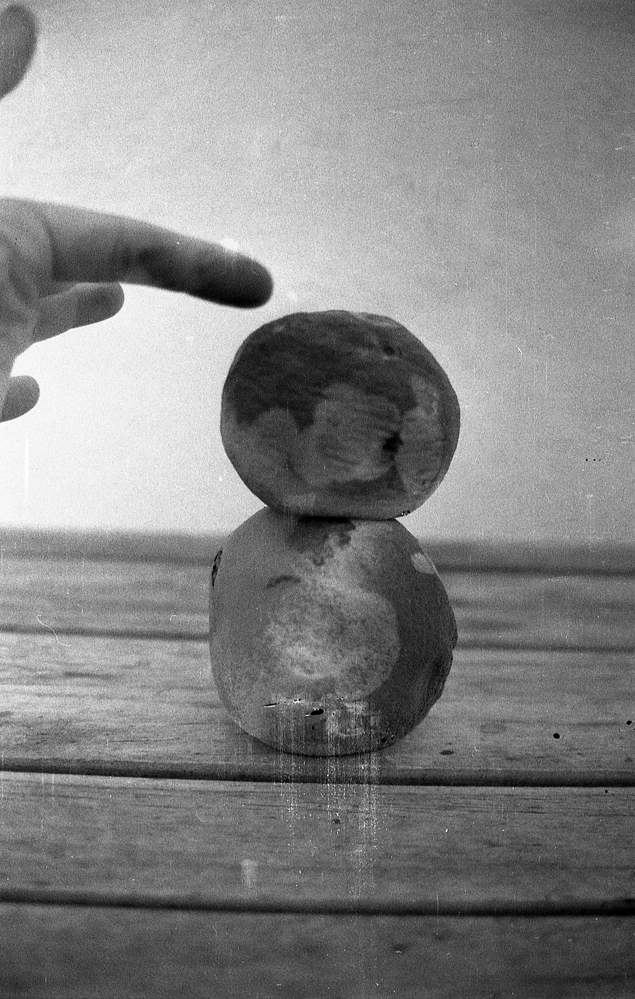
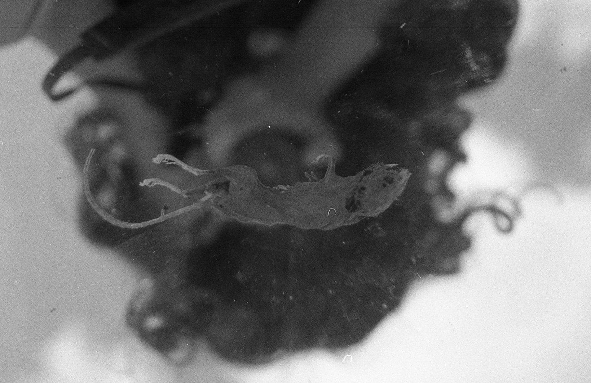
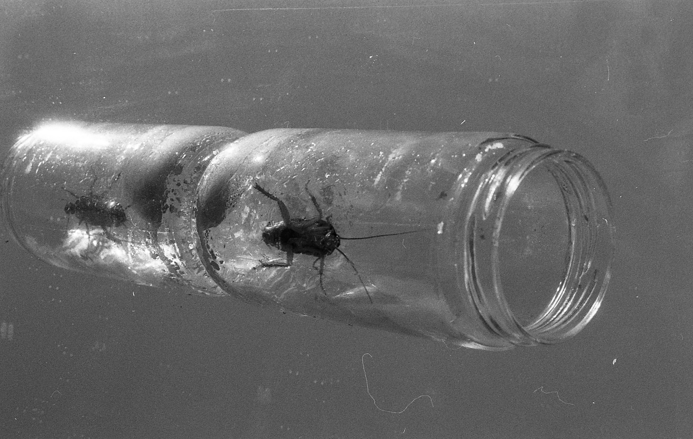

Press
Brotéria AGO/SET 2026
Teresa Rasquilha
Casa da Dona Laura
Rua do Salitre, 113
Lisbon
20–24 Jun, 2026
Evidências brings together images produced since 2022 from gestures of collection, accumulation, and transformation: a visual, almost archaeological, archive where obsessions and fascinations are revealed.
Starting from the practice of collecting traces and fragments of the outside world, the artist explores the tensions with the inner world in her first solo exhibition.
Between the documentary and the dreamlike, the photographs presented transform remnants and signs of existence into emotional and autobiographical objects, revealing a process of self-knowledge, transformation, and (re)construction of the self.


 ```
```